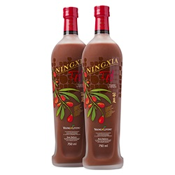
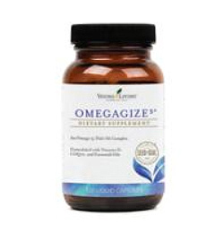
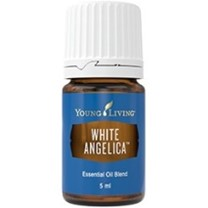
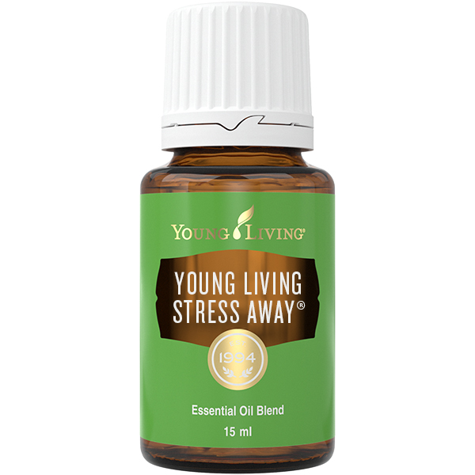

Etherische oliën worden al duizenden jaren voor cosmetische doeleinden gebruikt. Young Living wil deze oude traditie graag delen. Zuivere etherische oliën door zorgvuldige stoomdestillatie en koudpersen, zijn krachtiger en effectiever dan droge kruiden en ze leveren snelle en effectieve resultaten. Wanneer je een flesje etherische olie in je handen houdt, heb je het beste van de natuur in handen. De olie kan verstoven, geïnhaleerd, op de huid of bij een massage gebruikt worden.
Je kan enkele druppeltjes van deze olie aanbrengen op je handpalm en inademenen of deze laten verstuiven in de ruimte. Ik gebruik deze olietjes ook tijdens een massage, intuïtief of gericht naar een klacht. Ze zijn zeer effectief en niet meer weg te denken uit mijn dagelijks leven.
Verbeter je fysieke welzijn
Slechte eetgewoonten, te weinig beweging en teveel vervuiling om ons heen kunnen het lichaam uit balans halen en je energieniveaus doen dalen. Supplementen met etherische olie kunnen de balans herstellen.
Ik drink dagelijks een borrel NingXia Red, een supersterk antioxidant*. Het is een zoetzure drank die voornamelijk het superfood Gojibes (of wolfsbes) bevat Daarnaast bevat het ook sap en extract van pruimen, appelbessen, kersen, bosbessen En deze etherische oliën Lemon, Orange, Yuzu en Tangerine zorgen voor een heerlijke smaak.
*Antioxidanten zijn bepaalde vitamines, mineralen en andere voedingsstoffen. Ze zijn belangrijk voor onze gezondheid, want ze zorgen ervoor dat vrije radicalen geen schade aanrichten in ons lichaam.
OmegaGize-voedingssupplementen
OmegaGize³ combineert de kracht van drie dagelijkse supplementen : omega-3, vitamine D- 3 en CoQ10 Voor een goede werking van de hersenen, het hart, de ogen en gewrichten.
Creêer spiritueel bewustzijn
Creëer een hoger bewustzijn door meditatieve, versterkende etherische oliën te verstuiven, verdunnen of op je polsen, voeten en achter je oren aan te brengen. Populaire etherische oliën en melanges voor het creëren van spiritueel bewustzijn zijn onder meer Frankincense, of de melanges van 3WiseMen, Awaken, Believe…
Zelf gebruik ik dagelijks White Angelica . Dit is een kalmerende melange die een gevoel van veiligheid en rust oproept. Deze melange bevat oliën die de aura van de mens versterkt. Een aanrader voor de gevoeligen onder ons. Simpel een druppel op je handpalm, inwrijven op je handpalmen en je gezicht en aura afstrijken. Het hèlpt.
Stress Away
Voel je je wat opgejaagd? Moeite met het vinden van je Rust en Vertrouwen? No Stress... Deze etherische olie is speciaal ontwikkeld om je te ondersteunen bij stress en spanning in het dagelijks leven. Stress Away vergroot het energieveld om ons lichaam waardoor we ons sterker voelen en de uitdagingen in ons leven beter aankunnen. Geniet van deze positieve ontspannende geur & let it all go !